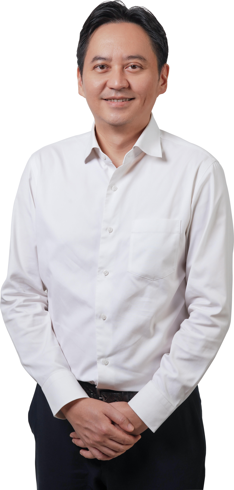

Kuala Lumpur · Malaysia
Building a better Kuala Lumpur.
Community leadership, public policy and ideas for a more liveable, inclusive and well-governed city.
About Ben Read My Writing
About
Ben Fong Kok Seng 方国昇
Ben Fong Kok Seng (方国昇) is a Kuala Lumpur-based community leader, entrepreneur and writer with a strong interest in urban governance, public policy and community development.
He serves as Chairman of MPPWP Zon Bukit Bintang and Treasurer of DAP Federal Territory Kuala Lumpur. He also serves on the WPKL Excise Licensing Board and is a Council Member and Management Committee Member of Majlis Sukan Wilayah Persekutuan (MSWP). His community work focuses on the everyday issues that shape life in the city — from neighbourhood infrastructure and public spaces to local businesses, sustainability and community welfare.
Through his writing and public engagement, Ben contributes ideas on Kuala Lumpur, governance and Malaysia's future, drawing on both his experience on the ground and his background in business.
Community
Working with communities.
Bukit Bintang
Working with residents, community organisations and government agencies across Bukit Bintang on neighbourhood issues including infrastructure, cleanliness, safety, mobility and public amenities.
A Better Kuala Lumpur
Engaging on urban issues including local governance, pedestrian connectivity, public spaces, enforcement, flood mitigation and making Kuala Lumpur a more liveable city.
Community Initiatives
Supporting community programmes in education, youth and sports, welfare, sustainability and neighbourhood improvement — bringing government, civil society and local communities together.
Selected Initiatives
Education
SPM Excellence Incentive Programme
Recognising academic achievement and supporting students in Bukit Bintang.
Explore community work → Community WelfareFood Distribution & Neighbourhood Support
Working with partners to support residents, including families in PPR Desa Petaling.
Explore community work → Urban ImprovementSafer, Cleaner Neighbourhoods
Community clean-ups and engagement on public amenities, mobility and neighbourhood safety.
Explore community work →
Ideas & Writing
Thoughts on our city and country.
Selected writing on Kuala Lumpur, public policy, governance, community and Malaysia's future.
DAP must reconsider Cabinet position if Najib is freed
→This Merdeka, choose country over politics
→The rocket still flies. Now it must choose its course
→Johor is a warning for Pakatan, not a prediction of GE16
→Building resilience, one recycled bottle at a time
→
Contact
Let's stay connected.
Follow Ben's community work, writing and public activities through his official social media channels.